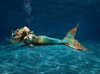

When people hear the word mermaid the picture of a beautiful woman with a colorful fishtail comes to mind right away.
The story is more complicated and much older than what Hollywood movies shows.
One of the oldest and most famous of the mermaid sightings in Orkney took place over a few summers around 1890.
At this time there were a series of sightings of a "creature" that came to be known as "the Deerness Mermaid".
A regular visitor to Newark Bay, in Deerness, the mermaid went on to achieve considerable fame,
with hundreds of eyewitnesses swearing to the validity of their encounters.
From documented reports, it appears the mermaid stayed some distance from the shore, so exact details are vague.
But one account does provide a good description of a sighting and, as you will see,
it was a far cry from the archetypal storybook mermaid:
"It is about six to seven feet in length, has a little black head, with neck,
a snow white body and two arms, and in swimming it just appears like a human being.
At times it will appear to be siding on a sunken rock, and will wave and work its hands."
Another mermaid encounter was reported in 1913, and detailed multiple sightings of a "mermaid" in the deep waters off the south-eastern coast of Hoy.
Ralph Taylor and crew, when visiting their lobster creels the other day, saw a strange creature, which looked like a mermaid, close by the foot of the Old Man.
It rose out of the water to the height of three feet and looked like a lady with a shawl round her shoulders, and streaming down her face.
This is the third occasion it has been seen at close range by them. The oldest people have never seen anything like it before,
and wonder what it can be. Some think it must be the Deerness Mermaid on tour.
This is only few of the thousands of mermaid sightings stories some of them confirms the idea of a beautiful and peaceful creature
while others tells about a scary and dangerous creature,
It is hard to tell what is true and what is fake in this matter.